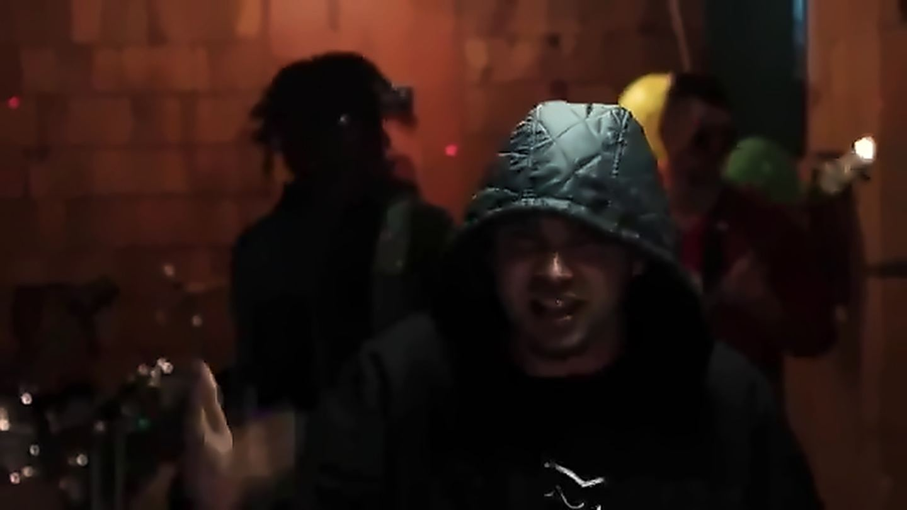
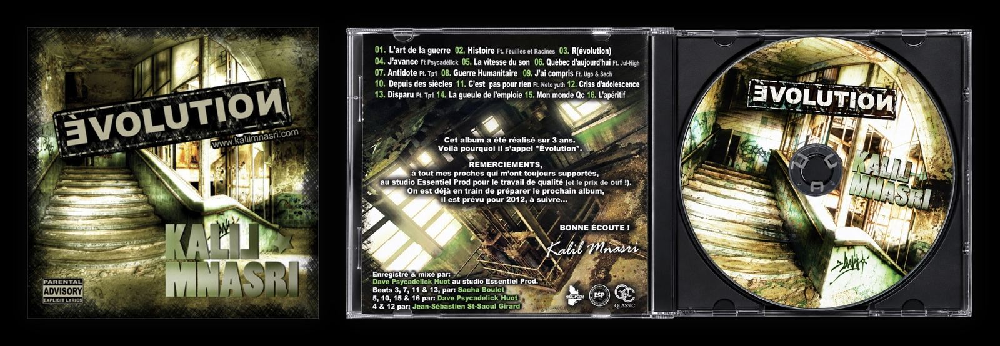

Bio
Kalil Mnasri est né d’une mère québécoise et d’un père tunisien. Il grandit à Québec et commence à rapper en 2004, à 14 ans. Pendant son adolescence, il vit entre le Québec et la Tunisie et fait son secondaire 3 à Tunis.
En parallèle, avec ses amis, il forme le collectif Tp1 (Tous pour un), avec Proulx, Fléau Le Ouf et Ugo. Le groupe enregistre chez Essentiel Productions, un des premiers studios rap de la basse-ville de Québec, où passent entre autres Souldia, 187, Psycadélick, St-Saoul, etc.
Tp1 multiplie les shows à Québec et sort le clip « Tous pour 1 mic ». Malheureusement, le groupe se sépare sans avoir sorti d’album.


En solo, il sort la mixtape Evolution chez Essentiel Productions, avec Psycadélick (aussi à la réalisation), Neto Yuth, CRi (Feuilles et Racines), Sach, Tp1 et Jul-High, décédé en 2020 (paix à son âme).
Kalil d’Orléans, alors sous le nom de Kalil Mnasri, joue, notamment, à La Ninkasi, au Dagobert, à l’Impérial et au Festivent de Lévis, en première partie de Souldia. Il fait du slam. Il a aussi fait la finale des Slams du Québec au Lion d’Or en 2014.

Sortie : 13 décembre 2011
Graphisme : Dave Psycadelick Huot
Enregistré et mixé par Dave Psycadelick Huot au studio Essentiel Prod.
Beats 3, 7, 11 et 13 : Sacha Boulet
Beats 5, 10, 15 et 16 : Dave Psycadelick Huot
Beats 4 et 12 : Jean-Sébastien St-Saoul Girard
En 2016, il quitte Québec pour se lancer dans l’agriculture. Il réapparaît en 2026, établi dans la région de Rimouski, sous le nom de Kalil d’Orléans.